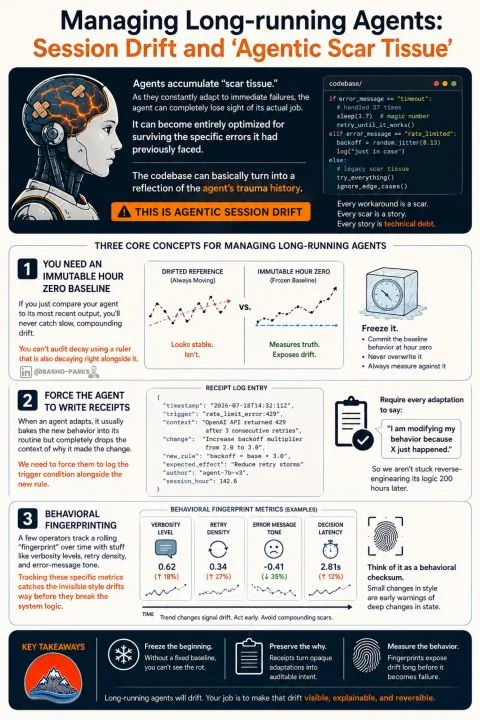

Left unchecked, yesterday's survival strategies become tomorrow's architecture. That's agentic scar tissue.
I'm leaps and bounds more interested in agentic behavioral integrity over time than I am circling the same maypole talking about model intelligence.
Leave an agent alone for 300 hours and you'll probably end up auditing its coping mechanisms instead of its engineering.
Long-running agents accumulate what I'd call agentic scar tissue. They adapt continuously to the environment they're operating in, which is exactly what we want them to do. But that adaptation necessarily accumulates inertia with every workaround, retry policy, validation check, fallback path, and defensive heuristic; it all gets folded into the agent's behavioral memory.
Given enough time to drift, it eventually stops behaving like the engineer you originally assigned to the task and starts behaving like the sum of every problem ever encountered.

Agentic Scar Tissue Does Not Look Like Failure
This is a subtle form of session drift that doesn't smell or look like failure at a glance. Tests still pass. Pull requests still get opened. Nothing obvious indicates that the system is working to survive its own operational history instead of solving the problem you directed it to solve.
A handful of ideas seem increasingly important if we're going to trust agents with work loops measured in days or weeks instead of minutes.
1. Keep an Immutable Hour Zero
I don't mean a checkpoint you occasionally restore from; I mean a behavioral baseline frozen the moment the session begins.
If today's agent is only compared against yesterday's, and yesterday's was already drifting, you've lost the ability to measure anything meaningful. You can't audit decay using a ruler that's changing its own stated length every time you pick it up.
Hour Zero should preserve the original mission, operating constraints, decision posture, and expected behavioral fingerprint. Freeze it. Never overwrite it. Every later comparison needs one ruler whose length stays put.
2. Force the Agent to Leave Receipts
Human engineers leave commit messages, issue references, design notes, and enough context that someone else can understand why a change happened six or twelve months later. Agents ought to be held to the same standard.
If a retry strategy changes because an API returned repeated 429s, or a parser becomes more defensive after malformed responses, that trigger should be recorded alongside the behavioral change.
The receipt doesn't need to be a memoir. It needs the timestamp, trigger, old behavior, new behavior, expected effect, and the authority under which the change was made. Without that record, a coping mechanism becomes architecture with no accountable author and no clean way back.
3. Fingerprint the Behavior
Most operations teams already watch CPU utilization, memory pressure, queue depth, and latency; all properties of the machine. Autonomous systems naturally introduce another category of telemetry: agentic properties.
Has the agent become significantly more verbose? Is it retrying more often than it did fifty hours ago? Has its decision latency changed? Has its error handling become unusually defensive?
None of those measurements tell you whether the agent is wrong. Together they can tell you whether it's becoming different. Track verbosity, retry density, decision latency, error tone, escalation frequency, and how often the agent reaches for fallback paths. The useful signal is the trend against Hour Zero, not a snapshot against yesterday.
The Engineer You Started With
I suspect this becomes part of standard agent operations over the next year. Infrastructure observability taught us how to detect unhealthy systems before they crashed. Agent observability will need to do something similar for reasoning itself.
The question won't simply be whether the process is still running. It'll be whether the identity of the engineer you started with is still recognizably intact.
Every long-running agent will inevitably drift right now. As newly minted CTOs of a small agentic army of PMs, the job is ensuring those agents, and you, can explain, measure, and unwind the behavioral memory before the codebase becomes a historical record of battles the agent isn't even fighting anymore.